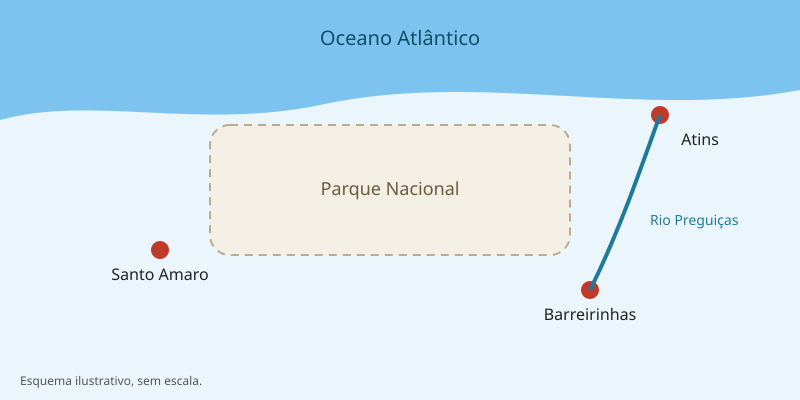

Roteiros nos Lençóis Maranhenses
Escolha a cidade de partida e o passeio que combinam com o seu tempo e disposição.
Comparativo de passeios
Cada roteiro tem um código, como RT-01, que você pode informar no formulário de contato.
| Código | Passeio | Cidade de saída | Duração aproximada | Esforço |
|---|---|---|---|---|
RT-01 |
Circuito Lagoa Azul | Barreirinhas | Meio período | Leve |
RT-02 |
Lagoa Bonita e pôr do sol | Barreirinhas | Meio período | Moderado |
RT-03 |
Barco pelo Rio Preguiças | Barreirinhas | Dia inteiro | Leve |
RT-04 |
Lagoa da Gaivota | Santo Amaro do Maranhão | Meio período | Leve |
RT-05 |
Travessia das dunas | Atins | 2 a 3 dias | Intenso |
Cidades de acesso

- Barreirinhas
- Principal porta de entrada, com a maior oferta de hotéis e agências de passeio.
- Santo Amaro do Maranhão
- Cidade menor, com lagoas próximas e paisagens com menos visitantes.
- Atins
- Vila na foz do Rio Preguiças, ponto de partida para travessias e procurada para o kitesurf.
Melhor época para visitar
As chuvas se concentram no primeiro semestre. As lagoas costumam estar mais cheias entre junho e setembro, logo após o fim do período chuvoso.
Antes de viajar, confirme as condições com as agências locais, pois o volume das lagoas varia de um ano para outro.